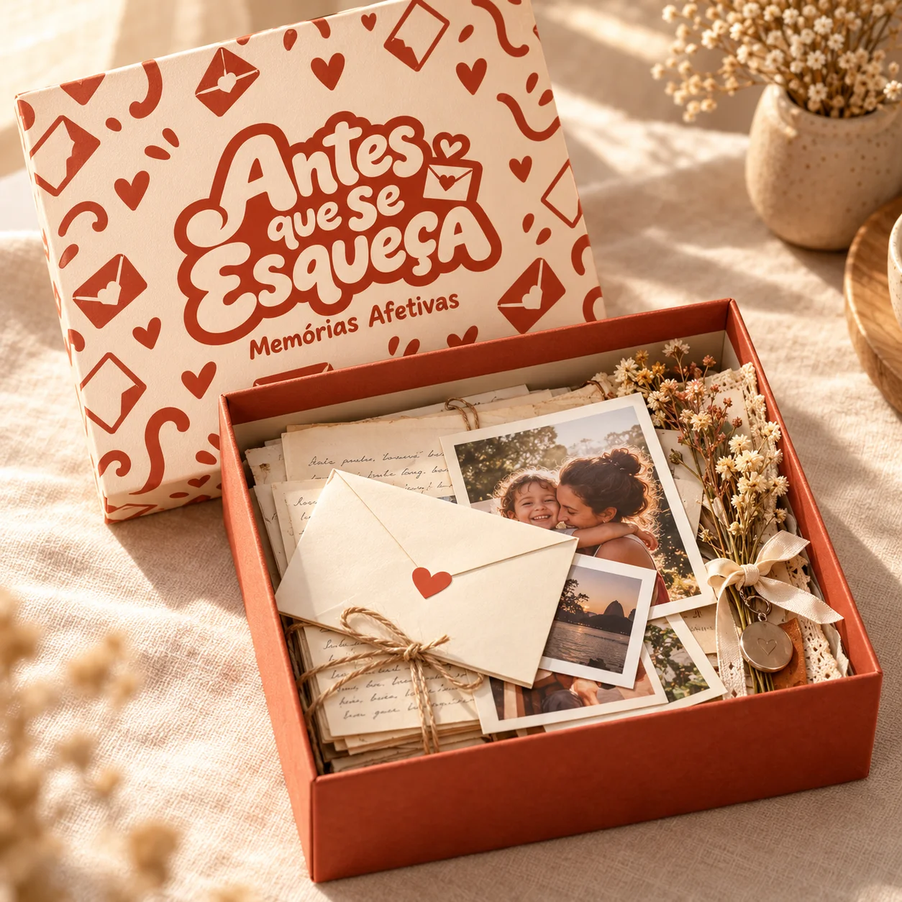
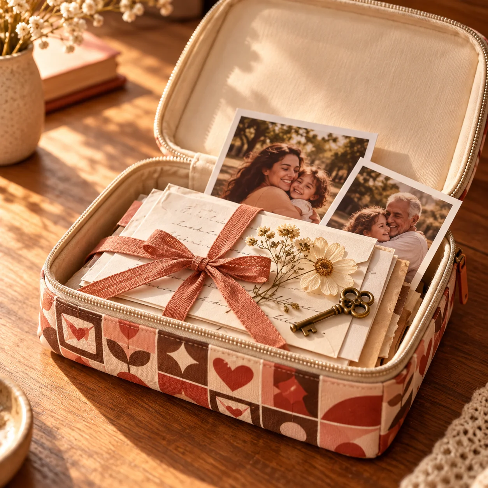
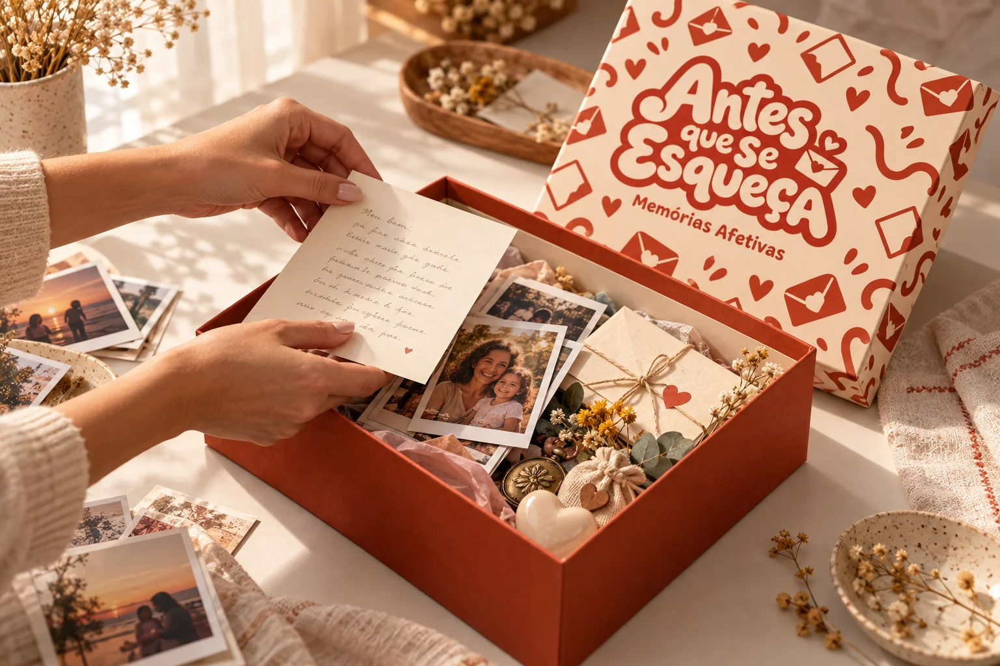

Memórias afetivas, feitas pra guardar
Presenteie com memórias que só vocês têm.
Reunimos cartas, fotos e lembranças em caixas e estojos personalizados. Você conta a história. A gente ajuda a transformar tudo em um presente para alguém especial.
Conte pra gente quem você quer presentear e o que vocês viveram juntos.

O que vale guardar
Tem lembrança que merece sair da tela. Virar uma carta, uma foto nas mãos, um pequeno objeto. Algo que a pessoa possa abrir, tocar e guardar por perto.
O presente é o jeito de guardar. A história é de vocês.

O presente tem o seu jeito
Mais de um jeito de guardar uma memória.
A história vem primeiro. Depois, a gente pensa no que guardar e na caixa ou no estojo que faz sentido pra ela.
-
01
Cartas e fotografias
As palavras que você quer dizer, as fotos que contam a história e aqueles momentos que merecem sair do celular.
-
02
Miniaturas e lembranças
Um lugar especial em miniatura ou pequenos objetos que fazem lembrar de uma pessoa, de um dia, de uma fase.
-
03
Caixas e estojos
O lado de fora também guarda afeto. Juntos, escolhemos o formato para reunir as suas memórias.
Como funciona
Da sua história ao presente.
-
01
Você conta a história
Pelo WhatsApp, conte quem vai receber o presente e qual lembrança você quer guardar.
-
02
Escolhemos o que vai dentro
Uma carta, fotografias, uma miniatura ou uma combinação de lembranças. A gente pensa nisso com você.
-
03
Cada detalhe ganha cuidado
Reunimos o conteúdo e combinamos os detalhes da caixa ou do estojo para que tudo tenha a ver com essa história.
-
04
Pronta pra emocionar
Com tudo reunido, é hora de entregar um presente que só faz sentido porque existe uma história entre vocês.

Uma história pra contar
Pra quem
Quem você quer presentear?
Pense em alguém. Depois, nas histórias que vocês têm pra guardar.
Por fora, um presente.
Por dentro, vocês.
Cartas, fotos e objetos contam partes diferentes da mesma história. Veja algumas formas que o presente pode ganhar:
Dúvidas
Antes de você perguntar.
Se a sua dúvida não estiver aqui, chama no WhatsApp. A gente responde com calma.
Ainda tenho uma dúvidaPrecisa ter uma miniatura?
Não. O presente pode reunir cartas, fotografias e outras lembranças. A miniatura é uma das possibilidades: o que vai dentro depende da história que você quer contar.
Posso incluir uma carta e fotos?
Sim. Conte o que você gostaria de incluir. A gente conversa sobre as palavras, as imagens e como reunir tudo no presente.
Quanto custa?
Depende do formato escolhido e do que vai dentro. Conte a sua ideia pelo WhatsApp para combinarmos a composição e o orçamento.
Quanto tempo leva?
O prazo depende da composição do presente. A data é combinada antes de começar. Se você tem uma ocasião em mente, avise no primeiro contato.
Como escolho entre caixa e estojo?
A escolha acompanha o que você quer guardar e o jeito de presentear. A gente mostra as possibilidades e conversa sobre o formato que combina com a sua ideia.
Antes que se esqueça, transforme em presente.
Escolha a memória. A gente cuida do resto.
Quero presentear uma memória